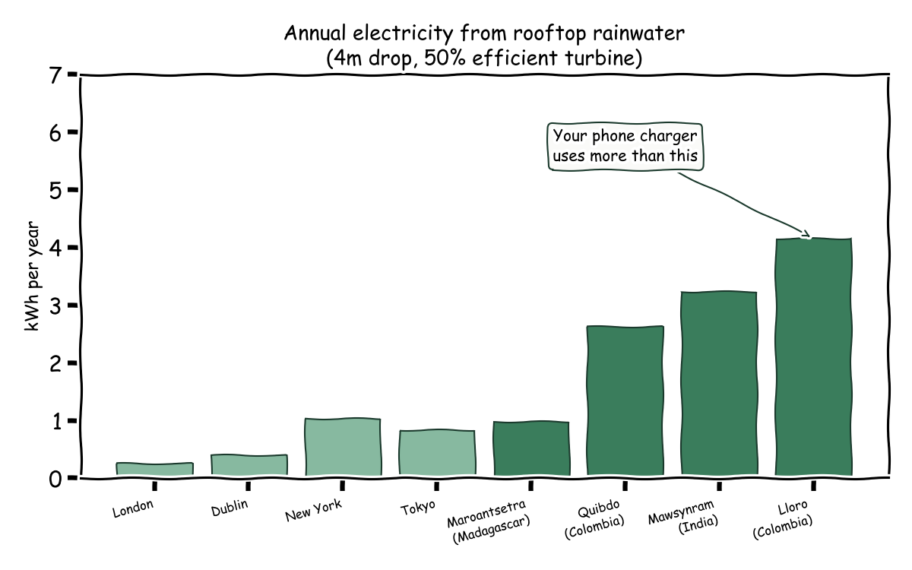
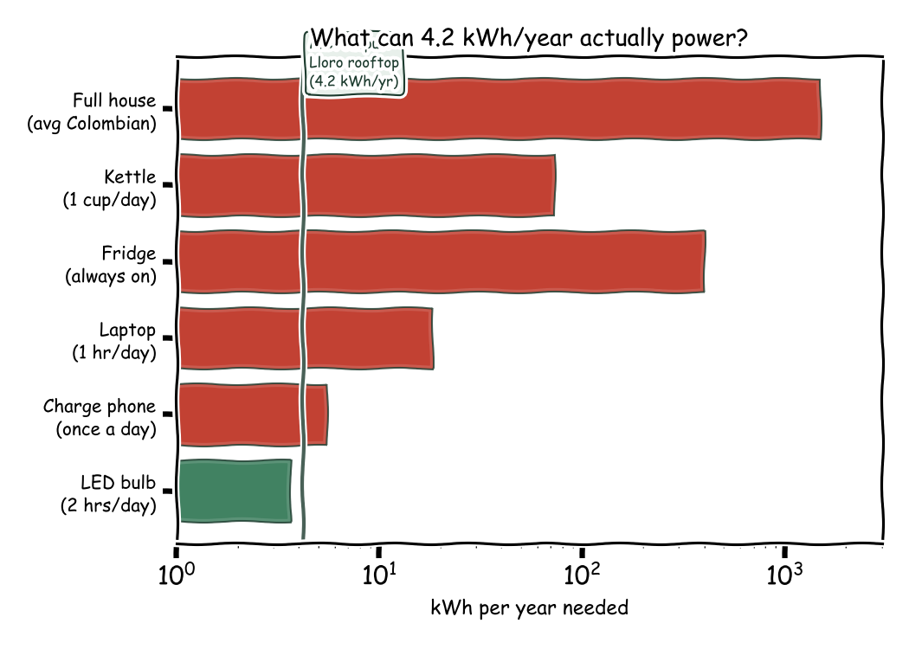
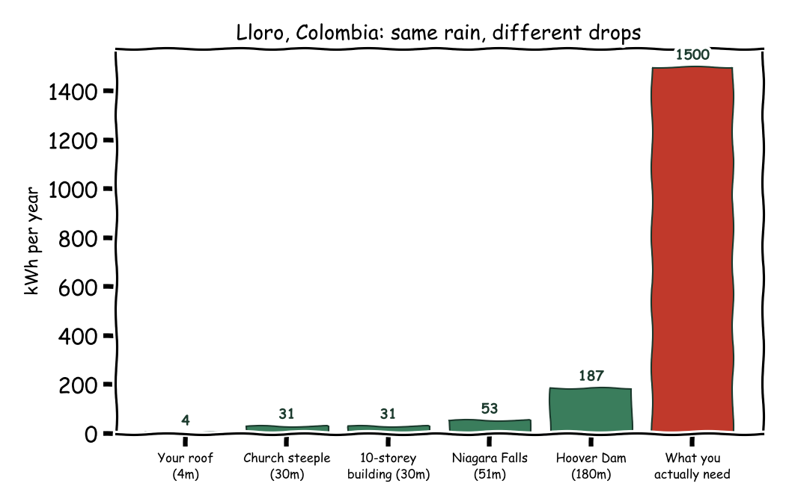
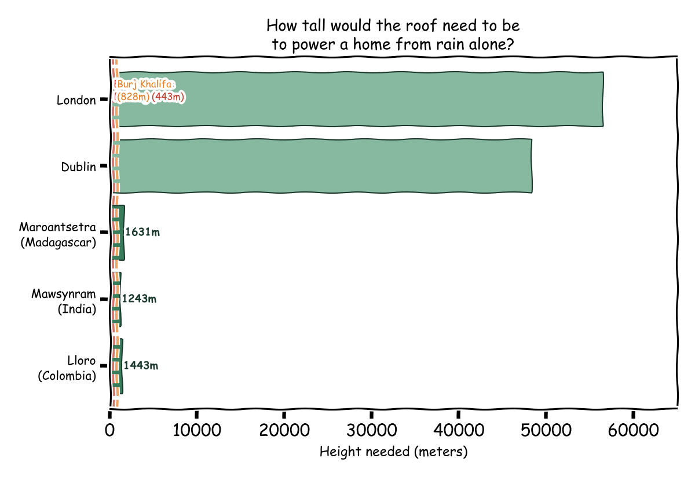

Late one night I fell down a rabbit hole. Someone on YouTube had built a micro-turbine powered by rainwater collected from his roof. The Bahamas were apparently mandating solar panels on every new building. What if you could do the same thing with rain? Not solar panels, but tiny turbines spinning under the gutters, generating electricity every time it rained?
The idea felt plausible. Some places get an extraordinary amount of rain. And some places use very little electricity. Surely there is a sweet spot where the rain falling on a single roof could keep the lights on?
I spent a few hours pulling rainfall data from Wikipedia and energy consumption figures from Our World in Data. What I found was both disappointing and illuminating.
The physics is simple. Water falls from a roof, passes through a small turbine, and the turbine generates electricity. The energy available depends on three things: how much water you collect, how far it falls, and how efficient your turbine is.
The formula is high-school physics. Power equals the mass of water times gravity times the height it falls, multiplied by the turbine's efficiency. To get annual energy output, you multiply by the total volume of water that lands on your roof in a year.
I assumed a four-metre drop (a single-storey house) and a turbine efficiency of 50%, which is generous for a micro-turbine. The roof area varies by country: about 50 to 60 square metres in developing countries, 80 to 150 in developed ones.
I started with the wettest inhabited place on Earth: Lloró, in the Chocó department of Colombia. It receives roughly 12,700 millimetres of rain per year. For context, London gets about 600. Lloró gets more rain in January than London gets all year.
A 60-square-metre roof in Lloró would collect about 762 cubic metres of water annually. That is 762,000 litres, or roughly a backyard swimming pool every two weeks. Run all of that through a perfect little turbine dropping four metres, and you get...
4.2 kilowatt-hours per year.
A typical Colombian household uses about 1,500 kilowatt-hours per year. The wettest place on Earth, with every drop of rain captured and converted, covers 0.3% of a household's electricity needs.

To put that number in perspective: 4.2 kilowatt-hours per year is enough to run a single LED light bulb for about two hours a day. It is not enough to charge your phone daily. It would take roughly 360 years of accumulated rain energy to run a fridge for one year.

The problem is height. Hydroelectric dams work because water falls hundreds of metres. The Hoover Dam has a 180-metre drop. A house has a 4-metre drop. That factor-of-45 difference in height translates directly into a factor-of-45 difference in energy.
Even at the Hoover Dam's height, using Lloró's rainfall on a single roof, you would only generate about 187 kWh per year, still well short of the 1,500 a Colombian household needs. To actually power a home from rain alone, you would need to drop the water about 1,400 metres, roughly the height at which most commercial aircraft begin their descent.

This is where it gets fun. If you could somehow build an impossibly tall house, how tall would it need to be to power itself from rainwater alone?
In Lloró, about 1,400 metres. In Mawsynram, India (the second-wettest place on Earth), about 1,200 metres. Both are taller than any building ever constructed but shorter than many mountains, which feels like an interesting middle ground.
Dublin would need a 48-kilometre-tall house. London would need 56 kilometres. At that point your roof is in the stratosphere, which introduces other problems.

This is not a practical energy proposal. It was never going to be. The interesting part is what the exercise reveals about how energy works.
The reason hydroelectric power is viable is not because water is special. It is because dams concentrate an enormous catchment area (thousands of square kilometres of watershed) and a significant drop height (hundreds of metres) into a single point. A roof has neither. The energy density of falling rainwater at domestic scale is simply too low.
There is a broader lesson here that applies beyond energy. When an idea feels intuitively right ("rain has energy, roofs collect rain, therefore roofs can harvest energy"), the fastest way to test it is to do the arithmetic. Most of the time, the arithmetic kills the idea. But the way it kills the idea is instructive. In this case, the limiting factor is not rainfall, not turbine efficiency, and not roof area. It is height. That is not obvious until you write the formula down.
The best analytical instinct is not to know the answer. It is to know where the answer is hiding, and to go find it before building anything.